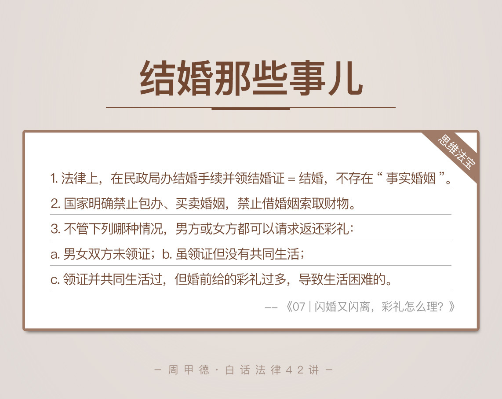

- 00 开篇词 这年头，你真应该懂点法律常识.md
- 01 “老周，我想知道” 常见法律认知盲区（一）.md
- 02 “老周，我想知道” 律师就在你身边（二）.md
- 03 “老周，我想知道” 律师就在你身边（三）.md
- 04 “老周，我想知道” 律师就在你身边（四）.md
- 05 创业未捷老板跑，社保工资哪里讨？.md
- 06 保密还是“卖身”，霸王条款怎么看？.md
- 07 编造流言蹭热度？看守所里降温度！.md
- 08 合同在手欠款难收，报警有用吗？.md
- 09 致创业：谁动了我的股权？.md
- 10 又见猝死！工“殇”究竟是不是工伤？.md
- 11 期权的“前世今生”.md
- 12 裁员面前，你能做的还有什么？.md
- 13 抄袭、盗图为什么做不得？.md
- 14 加班、工资、休假，你知道多少？.md
- 15 受贿原来这么“容易”.md
- 16 今天你用“VPN”了吗？.md
- 17 漏洞在眼前，可以悄悄破解吗？.md
- 18 “爬虫”真的合法吗？.md
- 19 非法集资到底是个啥？.md
- 20 黄色网站？不仅仅是“黄色”罪名.md
- 21 谁修改了我的积分资产？.md
- 22 外挂真能大吉大利吗？.md
- 23 如何看待“从删库到跑路”？.md
- 24 “伪基站”是你的避风港吗？.md
- 25 “网络诈骗”真的离你很远吗？.md
- 26 智斗中介：“北上广”租房图鉴.md
- 27 买买买！买房的“避坑”指南.md
- 28 闪婚又闪离，彩礼怎么理？.md
- 29 离婚还想和平？你要这么做.md
- 30 遗产继承的爱恨情仇.md
- 31 骗术升级？假结婚、假离婚的那些事儿.md
- 32 孩子学校受伤，谁之过？.md
- 33 如何让欠债还钱真正“天经地义”？.md
- 34 从透支到盗刷：人人须知的银行卡纠纷.md
- 35 远离“套路贷”的套路大全.md
- 36 危险！酒驾为什么被罚那么重？.md
- 37 老人倒地，“扶”“不服”？.md
- 38 “能动手就别吵吵”，代价你真的知道吗？.md
- 39 发生交通事故，如何处理？.md
- 40 交通事故综合法宝.md
- 41 婚姻家庭综合法宝.md
- 42 买卖房屋综合法宝.md
- 一键直达 法律专栏“食用”指南.md
- 加餐 “新冠肺炎”影响下，17个常见法律问题解答.md
- 结束语 法律，不会终止的篇章.md
28 闪婚又闪离，彩礼怎么理？
最近家里有个亲戚要娶媳妇儿，正好我也休假在家，就被拖着一起去商量订婚的事。订婚嘛，不可避免会谈到彩礼嫁妆等问题。说到这儿，我想起前段时间接手的一个关于结婚彩礼的案子。
男生小张和女生丽丽两人是相亲认识的，互相感觉还不错。因为两人年纪也不小了，家里老人催得挺紧，没两个月，两人就把婚约给定了下来。
按照咱们的老祖宗的规矩，订婚的话彩礼当然不能少。小张本身是个程序员，挣得不少，也还挺喜欢丽丽，所以并没过多思考，慷慨给了女方家里20万元作为彩礼钱。
可惜好景不长，订婚后没多久两人明显感觉性格不合，经常因为鸡毛蒜皮小事吵架、冷战。女方家觉得小张性子太直，脾气还很不好，就找了个“八字不合”的借口要求退亲。
这下小张家里发了愁：人还没娶着，20万怎么办？
你看，是不是很熟悉的情节？其实小张的问题还是比较简单的。怎么办呢？我们根据生活经验也能猜到，那就是去找女方把彩礼给要回来。
但是如果协商后，女方家不想退还这20万，那该怎么办呢？简单来说，小张可以向女方所在地的人民法院提起诉讼，要求返还全部礼金。
小张的问题很典型，但在生活中类似的纠纷远非这么简单。我再加几个条件，你看看还能解决吗？
如果两个人举办婚礼没多久，还没领结婚证，男方不同意在一起了，彩礼还用退吗？女方不同意的话还能退吗？
如果已经领了结婚证，也办了婚礼，离婚时还能要回彩礼吗？
如果是同居期间，女方怀孕做过流产，但男方又不同意结婚了，还能要求返还彩礼吗？
显然，出现了这么多“如果”后，想回答这些问题就显得不那么简单了。
怎么办呢？我们需要先来从法律的角度来了解几个概念。
法律知识
首先我们来看，什么是彩礼？这个词想必你不会陌生，各地叫法不一，有称财礼或是聘礼的。法律上是指为了缔结婚姻关系，一方给另一方、或双方互相给对方的嫁妆和礼金。通俗来说，也就是订婚时所给的财物。
彩礼的历史可谓源远流长，早在西周就已经出现。在上个世纪，我们常说的有“四大件”（即缝纫机、自行车、手表和电视机）、还有“三金一冒烟”（即金耳环、金项链、金戒指这三件金首饰和会冒烟的小汽车）。到了今天，一般还有房子、钞票、股票等大额财物。
必须强调的一点是，我们国家明确“禁止包办、买卖婚姻，禁止借婚姻索取财物”。涉及文化习俗，在这里我们不讨论彩礼的存在是否合理。但是如果以结婚的名义勒索、诈骗钱财，违背了婚姻的自愿原则，都是违法行为，会受到法律的惩处。
结婚又该如何理解呢？法律上所讲的婚姻关系成立，是指男女双方亲自到民政局的婚姻登记处，去办理结婚登记手续，领结婚证。不过呢，现实生活中，还有很多人觉得只要办了婚礼请了客，就等于结婚了。
很明显，法律上的结婚概念和传统的理解并不相同。只有领了结婚证，才能说双方的婚姻关系成立。也就是说，不管你有没有办婚礼、请客，哪怕已经生了孩子，只要没领证，在法律意义上，婚姻关系都不成立。
情景分析
先厘清了这两个概念，我们回过头来看小张的问题，和刚刚的几个“如果”。
原则上，小张、丽丽未领证，不管哪一方先结束了关系，小张都可以提起诉讼要求返还彩礼。
如果两人领了证，但没共同生活过，小张也可以请求返还彩礼。
如果两人领了证，但某一方因为出的彩礼钱太多，而导致生活困难的，也可以向法院请求返还彩礼。
当然，我们这里提到的是“可以请求”，至于具体能返还多少，还要结合双方生活花费和各方损失情况，比如说同居期间共同消费，再比如说女方怀孕流产等等情况，法院根据公平原则来认定返还的具体数额。
综上，我们可以得出这样一个结论：
不管有没有举办婚礼、有没有请客、有没有共同居住、有没有怀孕流产，也不管是哪一方提出结束关系，只要符合法律规定，都可以请求返还彩礼，法院会根据实际情况来认定返还多少。
思维“法”宝
讲了这么多，其实就是想告诉你，要理性地看待“彩礼”问题。只要弄清楚法律规定，很多问题会迎刃而解，也不至于还没“拜堂”先闹上“公堂”。
最后，我们来总结一下。首先对于婚姻关系的认定，最关键的就是要在民政局办结婚手续并领结婚证，其他的任何形式都不受法律认可，现在并不存在“事实婚姻”这种说法。
而彩礼问题上，不管下列哪种情况，男方或女方都可以请求返还彩礼：
男女双方未领证；
虽领证但没有共同生活；
领证并共同生活过，但婚前给的彩礼过多，导致生活困难的。
当然，具体能返还多少，要结合之前讲到的情况根据实际判断。

- 每个人在结婚之前可能都会遇到“彩礼”问题，毕竟几千年的传统难以避免，但要理性看待婚姻和金钱的关系。如果真有不合适的那一天，和平解决，免起争议。即便是没有了情感，即便是情感被现实打败，还是要优雅地说再见。不要还没开始就产生了恐惧，或许你只是还没有遇到对的那个人，淡淡一笑，仅此而已。
最后我留一个互动思考题，关于彩礼，你还听说过哪些奇葩事儿吗？欢迎留言和我分享！
© 2019 - 2023 Liangliang Lee. Powered by gin and hexo-theme-book.